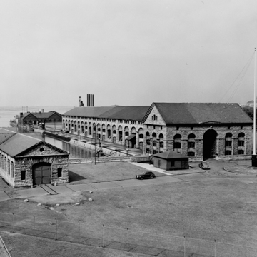

Innovation as a Cumulative Process
We at team TLM want to draw inspiration from the ingenuity that these scientists and engineers used to progress this technology into something hugely important in society, powering our everyday lives. To get from this primitive yet impressive technology for the time to what we have today, there had to be a huge amount of progression in technology. The development of the electrical generator was arguably the most impactful for the future of hydropower, as it allowed generation of electrical energy from kinetic energy. The engineers of that time immediately saw this generator’s potential in hydropower, and raced to create power using this newfound technology. On the outside, it may look to be a simple ordeal, but to be able to actually see how to implement the generator, and to immediately follow up with solutions, uses, ideas, questions, is something that not everyone can do. Our team here sees how the engineers of this time thought, and we wonder to ourselves what it would be like to discover a new use for a technology that wasn’t obvious. We want to be able to forge a path that will advance the future of science, and with our submersible, we plan to do just that. Our design will display a cheap solution to debris cleanup, a new claw concept for deep sea exploration, and hopefully inspire the next generation of scientists to explore the boundaries of technology, and create something that has never been seen before.
A Timeline of Key Innovations
Hydropower's early applications
There is evidence of water wheels and water mills from East Asia dating back to 4th century BC, as well as possible evidence of irrigation systems in ancient mesopotamia. Hydropower kind of stayed in this era for a long time, as before discovering steam power and conversion of kinetic energy into electrical energy had them with few options.
The improvement of the turbine
British-American engineer James B. Francis created an improved design for closed turbines, improving efficiency of other closed turbines of the time by 90%. While his design wasn't created with the intent of hydropower usage exactly, it didn't take long for others to pick up the sticks.
The first Hydropower plant
Using Francis's discovery as a stepping stone, French engineer Benoît Fourneyron developed the very first water-powered turbine. His design was used in first large-scale hydropower plant in the world, sat on Niagra Falls, NY. This plant inspired many more like it across North America and other areas of the world, and still stands there to this day.
Large scale hydropower plants become the norm
As the Edward Dean Adams Power Station in NY became a staple in the area's economy, proving efficiency and viability, countries dropped the production of small scale hydropower plants, and pushed for larger dams to support many people at once. Many dams were built during the cold war by the US and USSR, both countries trying to advance hydropower faster than the other.
The return of small scale dams, and environmental awareness
The public interest slowly drifted from large scale dams, and independent energy producers would set up dams for their own companies. As well as competition for dams increasing, there was a much higher awareness in the general public about how large dams can be detrimental to the environment, and that it was more sustainable to use small dams in areas less populated by fish, or making dams in ways that it will not disrupt populations of fish.

What Made the Innovation Succeed?
Looking across this long arc of innovation, several common themes emerge that help explain why the internal combustion engine succeeded where so many other technologies of the era failed or stagnated. First, there was a clear and urgent commercial demand: cities needed distributed power, businesses needed flexible prime movers, and individuals wanted personal transportation. This demand provided both the market incentive for inventors and the commercial revenue that funded continued research.
Second, the technology was modular and improvable. The four-stroke cycle, once established by Otto, provided a stable architectural framework within which individual components — carburetor, ignition system, valvetrain, lubrication system — could be improved independently. An inventor who devised a better carburetor did not need to redesign the entire engine; they could improve just that component and sell the improvement. This modularity accelerated the pace of innovation by allowing many specialists to work in parallel on different aspects of the same system.
Third, competition — among inventors, among manufacturers, and between nations — provided powerful incentives to improve. Racing, both on public roads and on dedicated circuits, played an important role: the performance demands of motor racing drove engineers to find materials, designs, and fuels that were then transferred to production vehicles. The innovation culture of the ICE was, from the beginning, one that rewarded performance and punished complacency. This competitive dynamic remains visible in automotive engineering today.